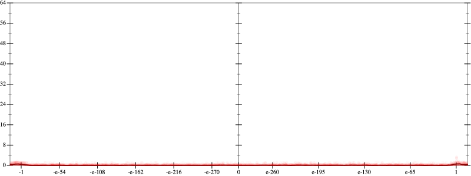
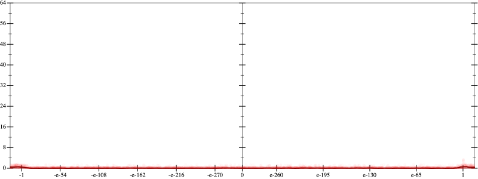
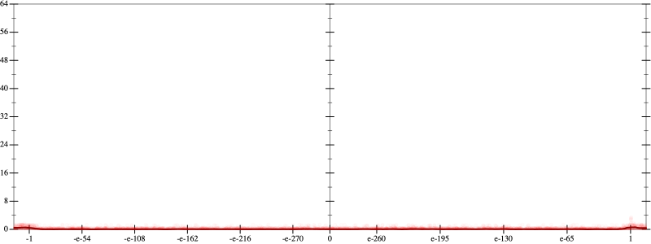

Error
 

Bits error versus x
Bits error versus x
Results
Initial program 0.1
rmApplied pow30.1
Applied pow-plus0.1
Time bar (total: 18.9s)Debug log
herbie shell --seed 501386223
(FPCore (x)
:name "5"
:pre (and (>= x -1e+16) (<= x 1e+16))
(+ (+ (* 120.0 x) (* -160.0 (* (* x x) x))) (* 32.0 (* (* (* (* x x) x) x) x))))